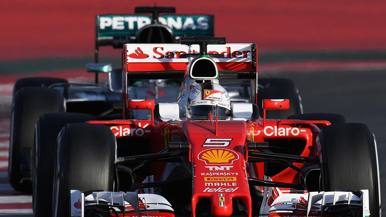

Over mijn hobby
Hobby over F1 houdt voor mij in dat ik mijzelf op de hoogte houd van alle nieuwtjes en elke race aap probeer te kijken(als het niet lukt kijk ik de herhaling).
Ik vindt dit zo leuk omdatik mij altijd al in autosport heb geintereseerd, ik ga dan relegmatig ook karten, en F1 is naar mijn mening de leukste competitie in deze catogorie